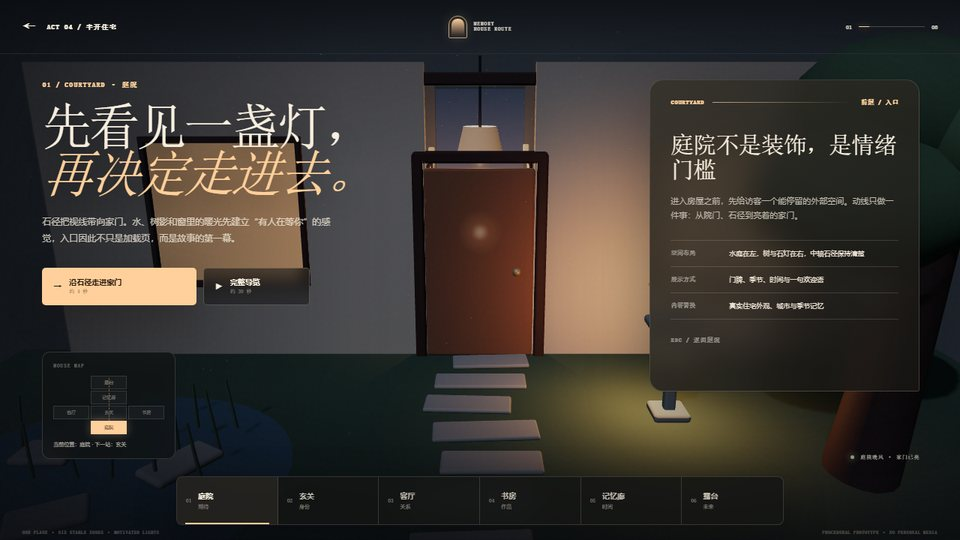
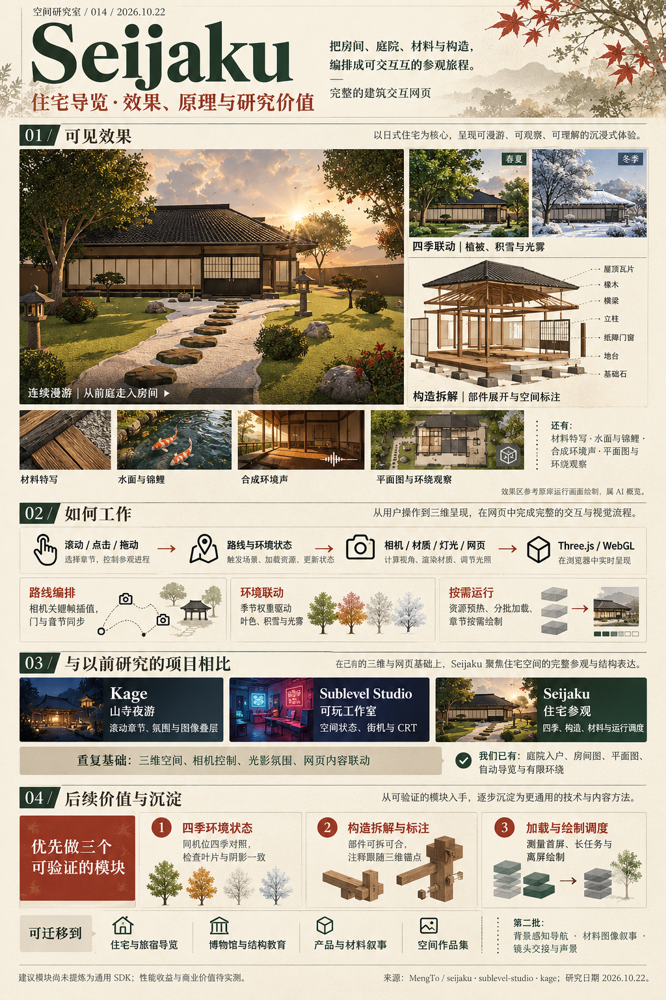

OUR PREVIOUS STUDY / 0904 · 080
这条住宅路线，我们已经走过。
我们在 Sublevel 研究中做过庭院入户、六个房间状态、平面图、自动导览与有限环绕。房间变化同步相机、门、灯光、文字和 URL。
这些是我们制作的原创扩展，比较时单独计入已有基础。Seijaku 的新增重点应落在季节、构造、运行组织与交接细节。
回看已有住宅演示 ↗MENG TO / ARCHITECTURAL EXPERIENCE
滚动穿过住宅与庭院，体验四季、材料特写、构造拆解和环境声。
研究季节联动、构件标注与资源调度，扩展到旅宿导览、展馆教育、产品展示和空间作品集。
源码与原作研究 · 中文分析
SEIJAKU / SUBLEVEL STUDIO / KAGE

00 / RESEARCH MAP
从运行效果出发，
看原理、看差异、看后续研究。
01 / EXPERIENCE
在同一个窗口中体验三份原作。
每次只运行一个场景。

走进 Seijaku
直接加载作者官方在线页面 · 需要网络与图形支持尚未启动 · 先选择一个项目或章节
在画面内滚动参观；Inspect 进入旋转缩放，Escape 返回；声音由画面右上角 Ambience 主动开启。
官方体验随作者网站更新；下方源码分析固定到明确提交。如果内嵌页面未显示，请使用“独立打开”。原库表单只演示本地确认。
02 / CAPABILITIES
从可见效果追到实现方法，
再判断它能用在哪里。
03 / UNDER THE SURFACE
建筑与素材在浏览器中实时组织，
用户的操作改变观看过程。
场景制作建筑、种植与大量表面细节由规则生成，配合锦鲤、石头、贴图与摄影资产。
运行组织主漫游、材料图像与构造章节协调状态，各自按需要绘制。
研究边界这是作者编排的固定作品。通用建筑编辑、自动路径规划与真实业务接入需要另外实现。
04 / SIDE BY SIDE
比较三份固定版本的原作，
同时记得我们已经完成的扩展。
| 能力 | Kage山寺夜游 | Sublevel Studio可玩工作室 | Seijaku住宅参观 | 对我们的意义 |
|---|

OUR PREVIOUS STUDY / 0904 · 080
我们在 Sublevel 研究中做过庭院入户、六个房间状态、平面图、自动导览与有限环绕。房间变化同步相机、门、灯光、文字和 URL。
这些是我们制作的原创扩展，比较时单独计入已有基础。Seijaku 的新增重点应落在季节、构造、运行组织与交接细节。
回看已有住宅演示 ↗“研究增量”表示相对这三份原版和已有住宅样例的增量；后续 Kage 创作工作台是独立扩展。对比不代表图形算法首创，也没有进行同设备画质或性能排名。
05 / VALUE IN PRACTICE
以下是基于实现的应用推导，
不是已验证的商业案例。
可复用的价值来自观看路线、环境状态、结构讲解与运行调度。将它们接入自己的准确内容与授权资产，才能从视觉案例走向具体产品。
07 / EVIDENCE & SOURCES
研究日期 2026.10.22
固定源码分析与在线体验分别记录。
三项目固定源码与已有研究记录已核对。本页展示区运行作者在线版本；研究建议尚未提炼为通用 SDK，性能收益尚未量化。
预览图从作者仓库在线引用，体验区加载作者页面。中文分析、总览图与研究界面为本项目整理；住宅扩展截图来自我们以前的原创样例。
Seijaku 原创代码、设计与素材尚未授予复用或再分发许可。本项目保留来源，通过链接与内嵌页面研究原作；独立模块建议使用原创或授权资产实现。